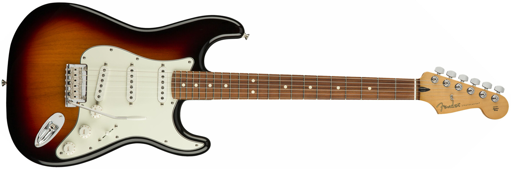
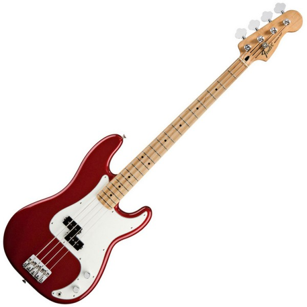
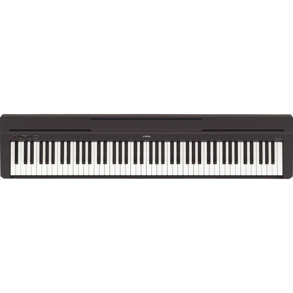

Instrumentuen Katalogoa

Fender Player Stratocaster
Gitarra elektrikoa- Stratocaster klasikoaren soinua eta itxura.
- Hiru single-coil pickup, soinu garbi eta distortsioan bikainak.
- Rock, blues eta pop estiloetarako aproposa.

Fender Player Precision Bass
Baxu elektrikoa- Soinu sakona eta indartsua.
- Rock, funk eta jazz estiloetarako ezin hobea.
- Alisozko gorputza eta pickup bakarra.

Yamaha P-45
Piano digitala- 88 tekla pisudun, piano errealaren sentsazioa.
- Grand Piano soinua kalitate handikoa.
- Ikasteko eta etxerako aproposa.